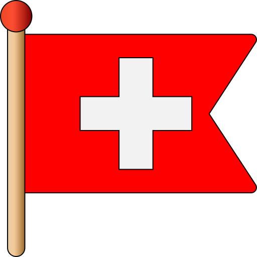

SPÉCIFICITÉS
Découvrez quelques informations clés sur Mike Horn et ses éxpeditions.
SES EXPLOITSDécouvrez quelques informations clés sur Mike Horn et ses éxpeditions.
SES EXPLOITS
Né le 16 juillet 1966 à Johannesburg, en Afrique du Sud. Mike Horn est de nationalité suisse.
Explorateur, Aventurier, Écrivain, Conférencier international
Son signe astrologique est le Cancer, un signe associé à la sensibilité, la persévérance et la détermination.
Ses principales qualités sont la détermination, le courage, la résilience mentale et l’autonomie. Il est reconnu pour sa capacité à repousser ses limites dans des environnements extrêmes.